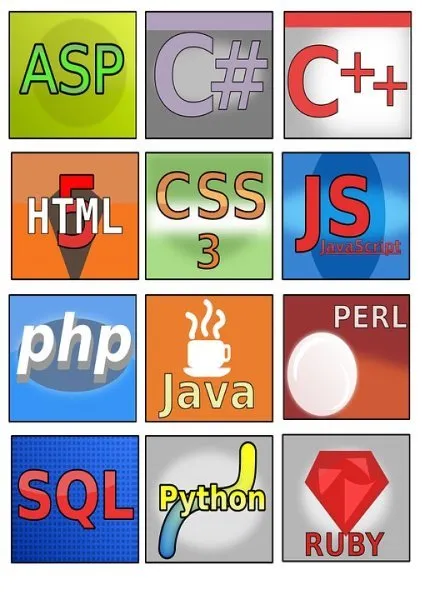

Danh sách
Vì sao bạn muốn tự học code?
Lựa chọn ngôn ngữ lập trình phù hợp
Thử một số khóa học trực tuyến
Tập trung vào tư duy máy tính
Lựa chọn sách
Thử nghiệm viết code
chạy trên những thiết bị yêu thích
Xem các đoạn video hướng dẫn
Thực hành các dự án cá nhân
Tham khảo code của người khác
Tìm kiếm người hướng dẫn
Hướng dẫn cách học hiểu quả
Trong thời đại số hóa, ngành công nghệ thông tin ngày càng phát triển mạnh mẽ và tạo ra nhiều cơ hội việc làm cho các lập trình viên. Các “ông lớn” công nghệ như Apple, Google, Amazon, Facebook và Microsoft cũng là những nhà tuyển dụng lớn trong ngành này. Tại Việt Nam, nhu cầu tuyển dụng lập trình viên CNTT luôn ở mức cao, điều này thúc đẩy nhiều bạn trẻ muốn học hỏi và làm việc trong ngành CNTT đầy tiềm năng này.
Có thể thấy, CNTT là một bức tranh tổng thể vô cùng to lớn, mỗi nhánh trong nó đều ẩn chứa nhiều điều thú vị, đòi hỏi bạn phải đào sâu nghiên cứu. Vậy nên, việc hiểu rõ các nhóm ngành công nghệ thông tin là bước đầu tiên giúp bạn không “lạc lối” trên con đường tìm kiếm và khám phá thế giới công nghệ phía trước.
Vì sao bạn muốn tự học code?
Trước khi bắt tay vào học code, hãy dành thời gian tìm kiếm lý do thực sự vì sao bạn muốn học viết code hay học một ngôn ngữ lập trình mới. Phải chăng:
- Bạn muốn thăng tiến?
- Bạn muốn tạo ra một sự thay đổi trong sự nghiệp?
- Bạn muốn tạo ra những ứng dụng của mình?
Ví dụ:
- Nếu bạn muốn tạo ra một phần mềm thay thế Photoshop, bạn có thể lựa chọn C++ cùng các chủ đề phức tạp hơn như cấu trúc dữ liệu, thuật toán, cấp phát bộ nhớ.
- Trường hợp bạn là một người đi làm đang muốn nhảy sang mảng lập trình, bạn có thể tham khảo một khóa học Lập Trình ngắn hạn thay vì tốn đến 4 năm để chỉ lấy bằng đại học văn bằng 2.
Lựa chọn ngôn ngữ lập trình phù hợp
Sau khi xác định mục tiêu tự học code của mình, hãy đi thêm một bước nữa bằng cách xác định ngôn ngữ lập trình mà bạn nên sử dụng. Tất nhiên, không có ngôn ngữ lập trình nào tốt nhất, chỉ có một số ngôn ngữ lập trình thân thiện với người dùng hơn một số ngôn ngữ khác. Chẳng hạn, HTML và CSS sẽ là khởi đầu thoải mái nhất. Tuy vậy, nếu chỉ dừng lại ở bộ đôi này, bạn sẽ chỉ làm được những trang web cơ bản.
Để tạo ra các website tương tác, nhất là các website liên quan đến hệ thống thanh toán hoặc cơ sở dữ liệu, bạn cần biết JavaScript, PHP, SQL và Python.
Trường hợp muốn tạo ra các ứng dụng di động, bạn có thể sử dụng Swift hoặc C để tạo ra các ứng dụng chạy trên iOS; Ngôn ngữ lập trình Java hoặc Kotlin cho các ứng dụng trên Android.
Trên tất cả, bạn chỉ cần làm quen với một ngôn ngữ lập trình đầu tiên, những ngôn ngữ lập trình tiếp theo sẽ khá nhanh chóng và dễ dàng để học tập.
Thử một số khóa học trực tuyến
Trong trường hợp bạn không thể xác định điều mà mình muốn học hay băn khoăn liệu mình có hợp với mảng đó hay không, hãy thử một khóa học online nhỏ. Tuy nhiên, có rất nhiều các lớp học lập trình trực tuyến kiểu này và nếu không may, bạn có thể mất đi nhiều thời gian, tiền bạc và cả động lực học tập của mình.
Tập trung vào tư duy máy tính
Thay vì chăm chăm học một ngôn ngữ lập trình cụ thể, bạn nên tập trung vào tư duy máy tính. Nói cách khác, đó chính là những nhận thức về thuật toán, trừu tượng, lingo, vòng lặp… Bởi, dù bạn sử dụng ngôn ngữ lập trình nào, những khái niệm này cũng đều xuất hiện và chi phối. Vậy nên, càng nắm rõ những nguyên tắc này, bạn càng dễ học các loại ngôn ngữ lập trình.
Với sự hỗ trợ của Internet và các trang web lập trình, bạn có thể tìm kiếm những kiến thức này dễ dàng.
Lựa chọn sách
Một trong những cách tốt nhất để tự học code tại nhà chính là lựa chọn một quyển sách giúp cung cấp cho bạn cái nhìn bao quát. Việc tiếp thu kiến thức kiểu này thường hiệu quả hơn quá trình góp nhặt kiến thức với đủ kiểu chủ đề trên Internet.
Một số những đầu sách này cũng cung cấp cho bạn nhiều lời khuyên có ích từ những Developer hàng đầu trong ngành. Nhờ đó, bạn có thể cải thiện tư duy và thói quen của mình trong quá trình tự học code.
Thử nghiệm viết code chạy trên những thiết bị yêu thích
Bạn đang sử dụng một thiết bị smarthome như Amazon Echo? Sao bạn không thử tài viết mã của mình bằng cách tạo ra các chương trình phần mềm nhỏ chạy trên chính thiết bị của mình nhỉ? Với những ngôn ngữ lập trình và framework như Node.js, Java, Python, C#, Go… bạn có thể sáng tạo ra một chương trình nho nhỏ nhưng không kém phần thú vị.
Với cách này, bạn vừa tự học code tại nhà, vừa có thể mở rộng kiến thức của mình về những thiết bị xung quanh mình. Ngoài ra, đây cũng là một trong những động lực giúp bạn tự học code đấy nhé!
Xem các đoạn video hướng dẫn
Trong nhiều trường hợp, xem người khác hướng dẫn cách làm sẽ dễ dàng hơn rất nhiều so với việc phải đọc sách, tưởng tượng rồi tự mày mò thực hành chúng.
Ngày nay, cùng với sự phổ biến rộng rãi của Internet và các nền tảng mạng xã hội, bạn dễ dàng tìm thấy những video hướng dẫn tự học code - đó có thể là một cuộc phỏng vấn chia sẻ cách viết code của cựu nhân viên Google hay tường thuật trực tiếp các cuộc thi viết code trên Youtube hay những video khắc phục các vấn đề thường gặp trong quá trình viết mã...
Bên cạnh Youtube, LinkedIn Learning cũng là nơi bạn có thể tìm thấy những video hướng dẫn viết code bổ ích. Tuy vậy, bạn sẽ mất một khoản phí khi đăng ký sử dụng kênh này.
Thực hành các dự án cá nhân
Bất kể bạn lấy được bao nhiêu chứng chỉ về lập trình, nếu không đưa ra được những dự án cá nhân, bạn khó lòng thuyết phục các nhà tuyển dụng. tất nhiên, dự án cá nhân với người tự học code tại nhà không nhất thiết là những thứ cao siêu như Google Maps. Chỉ cần đó là dự án mà bản thân bạn có động lực để bắt tay vào làm là được.
Một điều lưu ý là các dự án này cần liên quan đến những kỹ năng bạn hiện có. Trong một số trường hợp, bạn cũng có thể sử dụng các dự án cá nhân để lấy động lực học thêm những kiến thức và kỹ năng mới trong tương lai.
Tham khảo code của người khác
Trong một số trường hợp, bạn có thể tham khảo code của người khác và kiểm tra từng dòng để xem nó hoạt động như thế nào trong bức tranh toàn cảnh. Tất nhiên, bạn cũng đừng quên chia sẻ một vài sản phẩm của mình cho cộng động nhé!
Tìm kiếm người hướng dẫn
Theo một nghiên cứu khoa học, con người mất đến 10 năm để trở thành chuyên gia trong một lĩnh vực nào đó. Tất nhiên, nếu bạn có một người hướng dẫn, quá trình này sẽ rút ngắn rất nhiều. Một số diễn đàn, các hội thảo hackathon ở địa phương là nơi bạn có thể tiếp cận những bậc thầy trong lĩnh vực lập trình. Tất nhiên, việc họ có đồng ý để trở thành mentor của bạn hay không lại là vấn đề khác